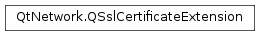

QSslCertificateExtension¶
Synopsis¶
Functions¶
- def
isCritical() - def
isSupported() - def
name() - def
oid() - def
swap(other) - def
value()
Detailed Description¶
The
PySide2.QtNetwork.QSslCertificateExtensionclass provides an API for accessing the extensions of an X509 certificate.
PySide2.QtNetwork.QSslCertificateExtensionprovides access to an extension stored in an X509 certificate. The information available depends on the type of extension being accessed.All X509 certificate extensions have the following properties:
Property Description name The human readable name of the extension, eg. ‘basicConstraints’. criticality This is a boolean value indicating if the extension is critical to correctly interpreting the certificate. oid The ASN.1 object identifier that specifies which extension this is. supported If this is true the structure of the extension’s value will not change between Qt versions. value A PySide2.QtCore.QVariantwith a structure dependent on the type of extension.Whilst this class provides access to any type of extension, only some are guaranteed to be returned in a format that will remain unchanged between releases. The
PySide2.QtNetwork.QSslCertificateExtension.isSupported()method returnstruefor extensions where this is the case.The extensions currently supported, and the structure of the value returned are as follows:
Name OID Details basicConstraints 2.5.29.19 Returned as a PySide2.QtCore.QVariantMap. The key ‘ca’ contains a boolean value, the optional key ‘pathLenConstraint’ contains an integer.authorityInfoAccess 1.3.6.1.5.5.7.1.1 Returned as a PySide2.QtCore.QVariantMap. There is a key for each access method, with the value being a URI.subjectKeyIdentifier 2.5.29.14 Returned as a PySide2.QtCore.QVariantcontaining aPySide2.QtCore.QString. The string is the key identifier.authorityKeyIdentifier 2.5.29.35 Returned as a PySide2.QtCore.QVariantMap. The optional key ‘keyid’ contains the key identifier as a hex string stored in aPySide2.QtCore.QByteArray. The optional key ‘serial’ contains the authority key serial number as a qlonglong. Currently there is no support for the general names field of this extension.In addition to the supported extensions above, many other common extensions will be returned in a reasonably structured way. Extensions that the SSL backend has no support for at all will be returned as a
PySide2.QtCore.QByteArray.Further information about the types of extensions certificates can contain can be found in RFC 5280.
See also
-
class
PySide2.QtNetwork.QSslCertificateExtension¶ -
class
PySide2.QtNetwork.QSslCertificateExtension(other) Parameters: other – PySide2.QtNetwork.QSslCertificateExtensionConstructs a
PySide2.QtNetwork.QSslCertificateExtension.Constructs a copy of
other.
-
PySide2.QtNetwork.QSslCertificateExtension.isCritical()¶ Return type: PySide2.QtCore.boolReturns the criticality of the extension.
-
PySide2.QtNetwork.QSslCertificateExtension.isSupported()¶ Return type: PySide2.QtCore.boolReturns the true if this extension is supported. In this case, supported simply means that the structure of the
PySide2.QtCore.QVariantreturned by thePySide2.QtNetwork.QSslCertificateExtension.value()accessor will remain unchanged between versions. Unsupported extensions can be freely used, however there is no guarantee that the returned data will have the same structure between versions.
-
PySide2.QtNetwork.QSslCertificateExtension.name()¶ Return type: unicode Returns the name of the extension. If no name is known for the extension then the OID will be returned.
-
PySide2.QtNetwork.QSslCertificateExtension.oid()¶ Return type: unicode Returns the ASN.1 OID of this extension.
-
PySide2.QtNetwork.QSslCertificateExtension.swap(other)¶ Parameters: other – PySide2.QtNetwork.QSslCertificateExtensionSwaps this certificate extension instance with
other. This function is very fast and never fails.
© 2018 The Qt Company Ltd. Documentation contributions included herein are the copyrights of their respective owners. The documentation provided herein is licensed under the terms of the GNU Free Documentation License version 1.3 as published by the Free Software Foundation. Qt and respective logos are trademarks of The Qt Company Ltd. in Finland and/or other countries worldwide. All other trademarks are property of their respective owners.